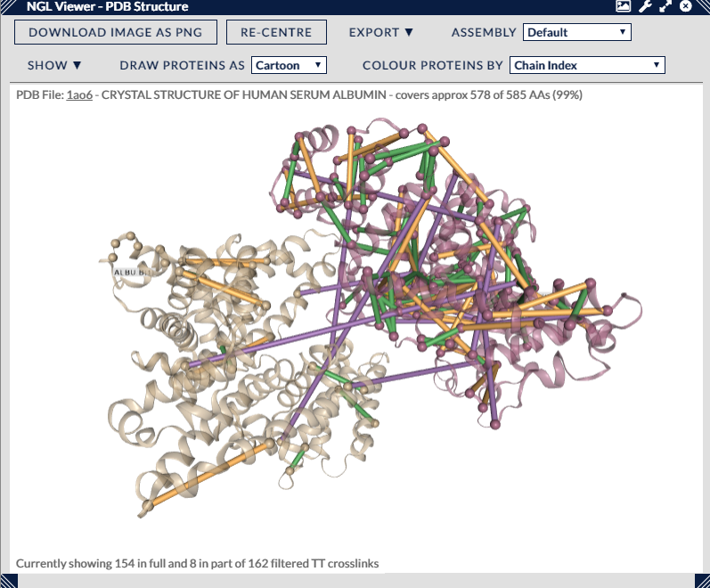

This view integrates the NGL 3D viewer (see references below) within Xi, showing the currently filtered cross-links in the context of a chosen PDB structure.
The majority of the panel is devoted to a 3D representation of the loaded PDB file. Proteins are shown as configurable structures with cross-links superimposed on top as elongated coloured bars. Residues at either end of the cross-links are shown as small grey spheres. Cross-links where only one end is contained within the PDB are shown as residues.
Within this panel are two short pieces of textual information giving the PDB filename and the coverage it has of the proteins and cross-links in the search. This coverage can range from complete (100%) for single proteins with a fully covering PDB to tiny fractions (1-2%) for large protein complexes. The number of cross-links can similarly vary from all of the currently filtered cross-links to only a handful where a PDB covers only a small fraction of the search proteins. As a rule of thumb a PDB file that covers only 50% of the protein sequences in a search can expect to display 25% (0.5 squared) of the full link set (both residues are covered) and 50% of the remaining links with one residue covered. For 10% coverage this drops to 1% (0.1 squared) for full links and 18% for half links.
Positional manipulation of the view is performed by clicking anywhere on the view and dragging the mouse pointer with the following effects:
Pressing certain keys also performs operations on the view:
A more in-depth manual for NGL is available here --> NGL Manual
Like the other views in Xi View, individual cross-links can be highlighted by moving the mouse pointer over them (plus a tooltip supplies details on the particular cross-link). Similarly, cross-links can be selected by using the left mouse button. In conjunction with the CTRL key, multiple cross-links can be selected (by clicking on unselected links) and currently selected cross-links can be unselected.
Clicking with the left mouse button on the background of the view will clear all selections.
There are a number of options available that can affect the visual presentation of the cross-links in the 3D view.
The "Re-Centre" button re-centres the structure within the panel (also available by pressing "R".)
There are three single selection drop-downs for choosing the parts of the PDB to display and for styling the protein structure itself. The first, "Assembly", offers a choice of which biological assembly within the PDB file to display. The default is the whole PDB structure, and other options may include UnitCell (usually the same thing), SuperCell (multiple copies of the PDB arranged spatially) and various Biological Assemblies. These Biological Assemblies can range in scale from part of the PDB, through matching the PDB exactly, up to being composed of multiple copies of the PDB - experimentation with these settings is the only way to find out for certain though details on definitions can be found at https://pdb101.rcsb.org/learn/guide-to-understanding-pdb-data/biological-assemblies.
The choice of assembly is important as it also usually constrains the PDB sub-structure on which cross-link distances will be calculated. For instance with PDB 1AO6, choosing to display the full PDB (two adjacent copies of the same protein) will look for possible cross-links within and between those two proteins. Choosing to display just one of the proteins (Bio-Assembly 1 or 2) will limit cross-link calculation to within just this protein.
The second, "Draw Proteins", changes the style of the protein representation. The default is "Cartoon" with other styles described here --> NGL Representation Styles. In practice, they range from atom-level representations like "Point" or "Ball+Stick" to more abstract representations such as "Rope" or "Cartoon".
The third selection dropdown, "Colour Proteins", controls the colouring of the protein representations. They range from the default "Uniform" grey colouring to colour schemes that change on a per-atom or per-residue basis such as "Element" or "Residue Name". Consequently, some colour schemes are only useful in conjunction with given representation styles e.g. the "Element" colour scheme works with "Ball+Stick" but has no effect in the "Cartoon" representation. A full list of NGL colour schemes can be found here --> NGL Colour Schemes. There is one XiView specific scheme - "Residues with Half-Links" - that highlights residues that form one end of a cross-link where the other end is out of scope of the PDB structure.
Another drop-down menu, "Show", holds several options for setting various decorations on the protein structure, and some options for controlling how cross-links are superimposed upon the structure.
For cross-links there are three independent options, we can:
The other available options under "Show" are
Finally, the "Export" dropdown offers three options for exporting various parts of the PDB/cross-links combinations.
PDB & Cross-Links - Exports a basic copy of the PDB file (ATOM records only) with a number of LINK and CONECT files that represent cross-links that can be fully plotted within the structure. Since this is a PDB file, there is a limit of 100,000 atoms and structures with more than one model (NGL fuses PDBs by giving them different model indices) cannot have their inter-model cross-links successfully exported. This can be used in various molecule viewers but usually requires trial and error to figure out how to get the cross-links to appear in each one.
Pymol Command File - Exports a Pymol command file that will reload and render the cross-links in the Pymol viewer. This supports multiple PDB files and inter-model/PDB cross-links, but obviously is limited to Pymol only.
Haddock Distance Restraints File (not definitive)- for use with the HADDOCK structure docker, this exports all the inter-model cross-links in a format compatible with the HADDOCK tool. These inter-model cross-links tend to be those we know exist between two pdb files, but since we cannot be sure of the PDB's relative orientation their distances are meaningless. However, HADDOCK can use their existence and restrictions based on cross-linker length to calculate the correct (or near to) orientation.
There is one remaining button which sits by itself, "Download Image as PNG", which will download a PNG (bitmap format) file of the current state of the 3D view. A vector graphic format is not available for this view. The filename will include information on search id and current filter settings.